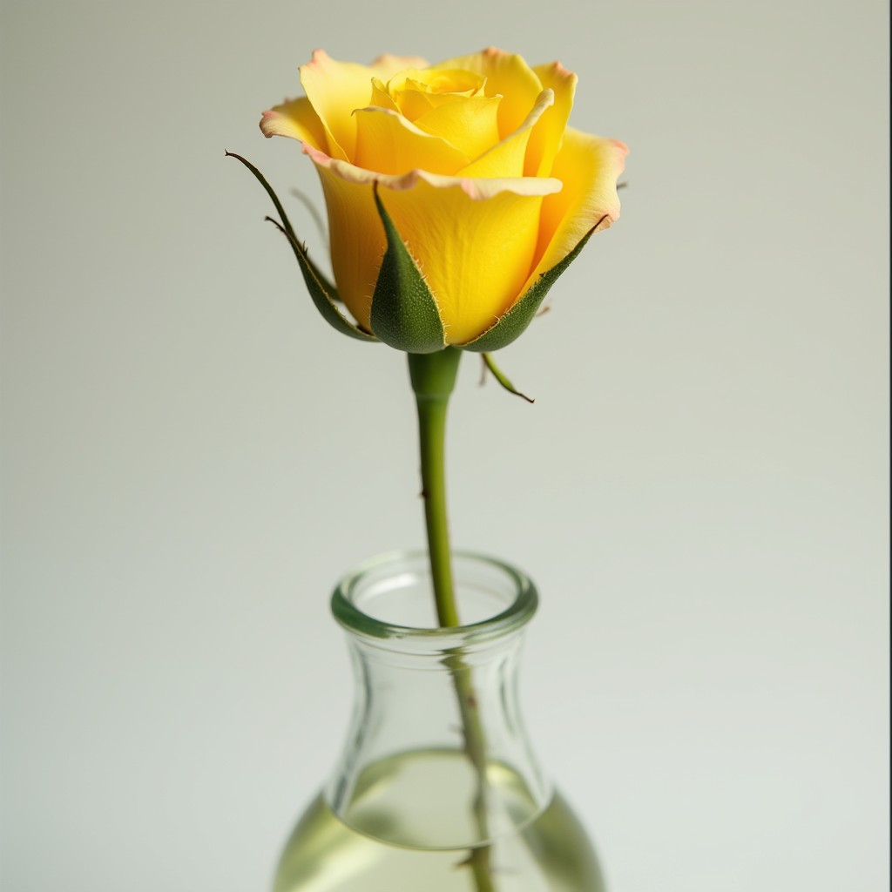

Yellow Rose
Represents friendship, joy, and hope. In love, it symbolizes a platonic love or a love that is blossoming.
Yellow Rose, you are the hope that illuminates my future. Your nascent love fills me with excitement and joy.